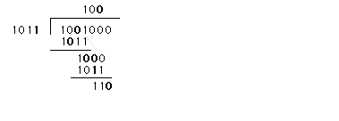

Introduction to Topic
Error Detection in Ethernet
Generalized CRC Implementation
Coding Theory behind CRC
Analysis of Error Detection Performance
References and Links
Introduction to Topic
Error Detection in Ethernet
Generalized CRC Implementation
Coding Theory behind CRC
Analysis of Error Detection Performance
References and Links
Error Detection is a very important function of the Ethernet protocol. Digital data is not like voice data were an error here or there will only effect the quality of transmission. With voice data, if an error occurs you can still hear Grandma talk about her cat. However, if errors occur in digital data the information is lost and the data transferred is useless. If errors go undetected, it will cause havoc and disaster. Why then is error detection dealt with so lightly? In most literature little attention is paid to the error detection capabilities of checksum algorithms. Ethernet for example, uses a 32-bit cyclic redundancy check (CRC). In most books, some mention is made to the error detection capability by throwing out a few numbers that represent the probability of an undetected error. But where did these numbers come from? This is the question I hope to answer in this page.
As mentioned previously, the Ethernet protocol includes error detection capabilities. It does so using a 32-bit CRC code. This code is stored in the Frame Check Sequence (FCS) which follows the data portion of the data packet. At the transmitter, the preamble of the packet is passed. The checksum is only taken on the remaining bits of the packet. Before the CRC algorithm is applied the first 32 bits of the address are ones complemented. Then the bits are modulo-2 divided by  , which is referred to as the generating polynomial. The remainder of this division is then appended to the original data bytes and the packet is sent out.
, which is referred to as the generating polynomial. The remainder of this division is then appended to the original data bytes and the packet is sent out.
At the receiver, the bits are read in and a new checksum is calculated from the received data. If this checksum is identical to the one in the Frame Check Sequence then no error is detected.[1,2]
The process described for the Ethernet protocol follows the same basic algorithm and implementation as any CRC code. Therefore for simplicity this section will provide a generalized discussion of CRC codes, to clarify the process of using them in actual systems. First, the basic theory of operation will be presented. This will be followed by a quick example of how the algorithm is implemented in hardware.[3,4].
In general, a CRC encoded data packet consists of n bits. The first k bits represent the original data. The last n-k bits consists of the parity check bits. In Ethernet, n can range from 512 to 12144 and n-k is 32. The transmitted packet can be expressed using this equation  , where
, where  . C(x) is the original data and G(x) is the generator polynomial. The following example will use a generating polynomial of
. C(x) is the original data and G(x) is the generator polynomial. The following example will use a generating polynomial of  with four bit data. Therefore n =7 and k=4.
with four bit data. Therefore n =7 and k=4.
Let us say that the data to be encoded is 1001. First, this data will be multiplied by X^n-k or X^3 resulting in 1001000. This value will then be divided by G(x), which can be represented as the binary number 1011. The following will be done using the modulo-2 addition and multiplication operations as shown in Figure 1.
Figure 1 - Example of Modulo-2 Division
The remainder of the division is 110, this is appended to the data creating a valid seven bit code word of 1001110. This word is transmitted. The receiver reads in the message and computes the checksum on the first four bits of the transmitted information. If the checksum received is equal to the checksum calculated no error is detected.
Another equivalent way to determine if an error occurred would be to read in the entire n-bit message and divide it by the generator polynomial. Since the original transmission was a multiple of the generator polynomial, the result should equal zero. If it does not then an error was detected. The reasoning behind this method views the received packet R(x) as a sum of the original information sent T(x), and any error information E(x), . Since T(x) is evenly divisible by G(x),
. Since T(x) is evenly divisible by G(x),  . Therefore, for an error to go undetected E(x)/G(x) = 0. This will only happen when E(x) is equivalent to a valid non-zero code word.
. Therefore, for an error to go undetected E(x)/G(x) = 0. This will only happen when E(x) is equivalent to a valid non-zero code word.
When examining the algorithm mathematically the process of modulo-2 division can seem quite complicated. However, the implementation of this algorithm in hardware is beautifully simplistic. In fact, several theorists studying coding theory turn to a hardware implementation to characterize the error performance of such codes because of its simplicity.[3]
The encoder consists of linear feedback shift registers and modulo-2 adders. Figure 2 taken from [5] shows the encoder for the generator polynomial. The powers of the polynomial with coefficients of one have a tapped position, or feedback path. The powers with coefficients of zeros do not have a feedback path.
Figure 2 - CRC Encoder
To begin the encoding process the switches are in position #1, such that the feedback loop is connected and the output is connected to the input. The shift register is driven by a clock. Every clock tick the input data is shifted into the register in addition to transmitting the data. After all k data bits are shifted into the register, the switches are switched to position #2. The shift register contains the modulo-2 remainder of the division. This checksum is then shifted out onto the data line and transmitted immediately.
At the receiver, there are two ways of determining the if an error occurs. The first performs the opposite function of the encoder as shown in Figure 3. The second is to perform the same operation and then compare the two checksum. The later is done in Ethernet.
Figure 3 - CRC Decoder
The CRC code is a type of Bose-Chaudhuri-Hocquenghem code (BCH). BCH codes are in turn a subset of Binary cyclic codes. Many of the generator polynomial for the CRC codes are formed by multiply the generator polynomial of a hamming code by x+1.[6,10,11] such as the CRC-16 and CRC-CCITT codes. Although, the Ethernet CRC code is contained in the same subclass its polynomial was found in a different manner. Therefore, the key to comprehension may be found in understanding BCH and hamming codes and how they work. Hopefully, the following sections will provide the tools we need to perform an accurate analysis of the CRC code error detection performance.
Before starting to explore the heritage of the CRC code, it is important to understand the basic terminology and building blocks of the theory. This section is meant to introduce these theoretical and mathematical building blocks.
All of the theory of CRC codes depends on the assumption that the information being processed is contained in a field. A field is defined as a group of elements, such that when elements of the field are added or multiplied together their result is also contained with in the field. For example, integers would fall into a field. However, we are interested in finite or galois fields were the number of elements is limited. The simplest of such fields to understand is a binary field containing only two elements 0 and 1 and is denoted by GF(2). Operations on this field are modulo-2 addition (logical XOR) and multiplication (logical AND). Similar, fields of higher order exist containing p elements, where p is a prime number, and performing modulo-p operations.
However, we are particularly interested in GF(2^m) fields. These fields are referred to as extension fields. Extension fields provide a simplified means of manipulating groups of bits instead of dealing with each individual bit in a transmission. For example, to detect errors in 3-bit words, it will be much easier to deal with GF(2^3) fields than to try to deal with each bit individually. A GF(2^3) field will contain all eight possible combinations of the three bits: 000, 001 ...... 110, 111. These codes can be expressed as polynomials. For example the code 101 is equivalent to  , as discussed earlier in the CRC code algorithm.
, as discussed earlier in the CRC code algorithm.
Since each code word in the GF(2^3) extension field can be thought of as a polynomial. We must find a polynomial ,p(x), under which the additive and multiplication properties hold, i.e. modulo - p(x) operations. This polynomial is referred to as the primitive polynomial and must satisfy several criteria for these operations to hold. First, the polynomial must not have roots in the GF(2) field. Secondly, its roots must be contained within the extension field. For a GF(2^m), field there will be exactly m roots. Third, it's first 2^m-1 powers equal the non-zero elements of GF(2^m). For the GF(2^3) case, acceptable primitive polynomial is  .[6] Primitive polynomials are very important to error detection codes. Their use will help minimize the number of undetectable errors that are possible.
.[6] Primitive polynomials are very important to error detection codes. Their use will help minimize the number of undetectable errors that are possible.
CRC codes are a subset of a subset of linear block codes. Linear block codes are very well defined, every text on error-correction codes has dedicated at least one chapter to the subject. [6,7] As discussed early the basic format of the data packets being sent consists of an n-bit message. The first k-bit of the message are the actual data and the last n-k bit represent the redundant checksum. This is referred to as a (n,k) linear block code. The operation of these codes can easily be explained in matrix notation were c represents a valid codeword: c = iG. i is a 1 X k vector that represents the k-bit information bits and G is referred to as the generator matrix. The generator matrix is simply a different way of representing the generator polynomial discussed earlier. The first k columns of G form an identity matrix, which results in the first k bits of c equaling the original information. The remaining n-k columns in G represent linear combinations of i, thus deserving the name systematic linear block code.
Essentially, the generator matrix maps a field of length k vectors into a field of length n vectors. Since there are only 2^k valid code words, not every code in the 2^n field will be used. This means that if an illegal code is received at the decoder, an error has occurred during transmission. Some of these errors can not only be detected but they can also be corrected. The property of linear block codes that defines error detection capability of a code is the hamming distance. The hamming distance refers to the number of bit positions that two valid codewords differ by. The minimum distance, d, refers to the minimum number of bit position that any two valid codewords differ by. If the minimum distance is two, all single bit errors can be detected because they will cause illegal codewords. Similarly, a minimum distance of five can detect any four single bit errors.
Binary cyclic codes are simply linear block codes with an added restrictions. Cyclic codes must still meet the addition and multiplication restrictions describe before, while also meeting the shift function. This means that any valid code word, can be shifted any number of times and remain a valid codeword. This places special restrictions on the generator matrix, and brings it together with the generator polynomial. In the previous example the generator polynomial was  . The equivalent generator matrix would consists of the following rows:
. The equivalent generator matrix would consists of the following rows:

where each row is simply the first row shifted.[5]
The Ethernet CRC code is contained in a subset of linear block codes called BCH codes. These code follow certain basic characteristics. First, they have a block length of n = 2^m - 1 digits. For Ethernet we have seen that n can very between 512 to 12144. Secondly, the number of parity bits, n-k in the previous discussion, must be less that or equal to mt, where t is the minimum number of bits that can be corrected. Since Ethernet uses the CRC code as an error detection code as opposed to an error correction code, the minimum t can be assumed to be 1. Finally the minimum hamming distance, d, for this group of codes is greater than or equal to 2t-1.
To meet these restrictions, special attention must be paid in picking the generator polynomial. The generator polynomial must consist of the least common multiples of the primitive polynomials. For Ethernet this results in g(x) = alpha^7, where the alpha is the primitive element of GF(2^32). From the table in [9], alpha was found to be  .
.
Now that we have explored the theory behind the CRC codes, how does this relate to the error detection capability of the code. This section will look at the development of the absolute performance of the code void of any physical or a priori data about the probability of error.[4] As well as examining the reality of the codes performance including information about the probability and characteristics of error that actually occur.[8-14]
Based on the characteristics of the linear block codes several statements can be made about the worse case error performance on CRC codes in general. There are two categories of errors by which error detection codes can be analyzed. The first is multiple single bit errors and the second is burst errors.
Multiple single bit errors refer to errors that occur independently throughout the transmission. These errors occur randomly with equal probability in any of the n-bits being transmitted. The probability that these errors go undetected can be derived from the hamming distance of the code. Unfortunately, the Ethernet protocol complicates matters with the introduction of variable length messages. Therefore, the hamming distance must be calculated for each message length. Luckily, this is a very computationally intensive task has been performed for the Ethernet protocol in reference [12]. A summary of their results is shown in Table 1 taken from their Table 2.
Table 1 - Minimum Distances
For valid codes in the Ethernet protocol, the hamming distance is either 4 or 5. This means that for longer messages three single bit errors can be detected while for shorter messages up to four single bit errors can be detected. At first these figures seem a little low for all the extra effort. Many have worked on determining the probability that an undetectable error occurs using specially algorithms[12,13,14] as well as special hardware [3] to simplify the calculation. They have determined the worst case maximum bound to equal 2^-r, where r is the number of parity bits. In our case this translates into the probability of an undetected error equals 2^-32. This assumes that the channel is symmetric and that the worst case bit error rate is .5. It can be derived from calculating the probability that exactly e errors occur in n-bit of data and summing over all possible e.
This calculation is very computational intensive, since the Ethernet has varying sized packets as well as many possible bit error rates. Therefore, alternate ways have been developed to perform this calculation. One of the more popular ways is introduced in [12]. The probability of an undetected error, Pe, is dependent on the bit error rate, epsilon, and minimum distance of the code Cn. It was found that
 ,
,
where An,i is the number of codewords of weight i and n is the number of bits in the transmitted packet. The result of the calculation is shown in Figure 4, it was scanned from [12].
Figure 4 - The Probability of undetectable error
From Figure 4, several trends are apparent. First, the maximum bound for an undetected error seems to hold for most n. Secondly, longer packets of data are more prone to undetected errors, the bit error rate needs to be smaller than 10-4 to deviate significantly from the worst case error condition for packets of 12144 bits, while packets of 512 show significant improvement at error rates of less than 10^-2. This trend makes sense, with longer packets there are more possible undetectable errors than with smaller packets because they have a smaller hamming distance.
In addition to multiple single bit errors, burst errors are also very important in evaluating the performance of error detection codes. A burst error is defined by a group of errors all occurring within m bit positions. Burst errors are important because they more accurately reflect the type of errors that are more likely to occur.
As discussed before, the received signal can be thought of as the addition of the original message plus some error information. If this incoming signal is divisible by the generator polynomial, G(x), no error is detected. An undetected error occurs only if the error polynomial is divisible by G(x). In our case G(x) has an order of 32, therefore all error polynomials with less than 32 bits are not divisible by the generator polynomial and will not create an undetectable error. Therefore ALL burst errors of length less than 32 or n-k, where n is the number of bits in the message and k is the number of data bits, are detectable. Similarly if the burst length is n-k+1, then probability of an undetected error is 2^-(n-k-1). In addition if the burst length is greater than n-k+1 the probability of an undetected error is reduced to 2^-(n-k). This is derived from the fact that there are 2^n possible received words, while only 2^k of those are valid code words. If a burst error occurs with length greater than 32, then there is a chance that the error polynomial will be divisible by the generator polynomial. This in turn yields an undetected error.
There has also been work done on the error detection of double burst errors.[12]. In this case we have two single burst errors of less than b bits. The double burst error can only be detected if the single burst error of b-bits can be corrected. The length of the double burst errors detected is dependent on the size of the packet, the results are shown in Table 2 taken from Table 3[12].
Table 2 - Double Burst Detection Burst Length
For Ethernet packets double burst errors with lengths between 13 and 9 can be detected.
The previous discussion of error performance still does not provide the real picture of how an error code will really perform. For example, they assume that all code words are equally likely and they can only make guestimates at the characteristics of the error encountered. The only real way to find out how a code is going to behave in a real life system is to try it out. One of the first applications that used the same CRC code as Ethernet was the Autovon channel.[4] The channel was constructed using modems with a baud rate of 9600. The network was meant for voice grade communication. The article first calculates the probability of undetected errors using a bruit force method with a subset of the possible codes. However, they then test these estimated probabilities using a simulation. This simulation was developed with actual error data. Therefore, a more accurate model of the channel error characteristics was defined. The results obtained from this simulation show a fairly optimistic performance of the CRC code. In fact, during their evaluation no undetected errors occurred with block lengths of 1024 and 2048.[4] This provides some confidence that the purely theoretical calculations performed may be more pessimistic than the actual implementation of the CRC code.
From the web page we have seen the various ways that error detection codes can be analyzed as well as presenting some of the basic coding theory behind there existence. This gives meaning to the numbers so casually used in many texts and articles.
1. ANSI/IEEE Std 802.3. Information Technology - Local and metropolitan area networks: Part 3 Carrier sense multiple access w/ collision detection access method and physical layer specifications. IEEE,1992.
2. Prof. David Cyganski. EE535 Class notes 2-14-96.
3. Dexter Chun and Jack Keil Wolf. "Special hardware for computing the probability of undetected error for certain binary CRC codes and test results." IEEE Transactions on Communications, vol. 42, no 10, 1994, pp. 2769 - 2772.
4. Kenneth Brayer and Joseph L. Hammond. "Evaluation of error detection polynomial performance on the Autovon channel". National Telecommunications Conference, 1975, pp. 8-21 - 8-25.
5 Joseph L. Hammond and Peter J.P. O'Reilly. Performance Analysis of Local Computer Networks. Addison-Wesley Publishing Company, Reading, Ma., 1988, pp. 42 - 65.
6. Arnold M. Michelson and Allen H. Levesque. Error Control Techniques for Digital Communication. John Wiley & Sons, New York, 1985.
7. Shu Lin. An Introduction to Error-Correcting Codes. Prentice-Hall, Inc., Englewood Cliffs, NJ, 1970.
8. Guy Castagoli, Stefan Brauer, and Martin Herrmann. "Optimization of cyclic redundancy-check codes with 24 and 32 parity bits". IEEE Transactions on Communications, vol. 41, no. 6, 1993, pp. 883 - 892.
9. W. W. Peterson and E. J. Weldon. Error Correcting Codes, 2nd ed. MIT Press, Cambridge, Ma., 1972.
10. Jack Keil Wolf and Robert D. Blakeney, II. "An exact evaluation of the probability of undetected error for certain shortened binary CRC codes". MILCOM, 1988, pp. 15.2.1 - 15.2.6.
11. Jack Keil Wolf and Dexter Chun. "The single burst error detection performance of binary cyclic codes". IEEE Transactions on Communications, vol. 42, no. 1, 1994, pp. 11 - 13.
12. Toru Fujiwara, Tadao Kasami, and Shu Lin. "Error detecting capabilities of the shortened hamming codes adapted for error detection in IEEE standard 802.3". IEEE Transactions on Communications, vol. 37, no. 9, 1989, pp. 986 - 989.
13. Tohru Fujiwara, Tadao Kasami, Atsushi Kitai, and Shu Lin. "On the undetected error probability for shortened hamming codes". IEEE Transactions on Communications, vol. 33, no. 6, 1985, pp. 570 - 573.
14. Jack K. Wolf, Arnold M. Michelson, and Allen H. Levesque. "On the probability of undetected error for linear block codes". IEEE Transactions on Communications, vol. 30, no. 2, 1982, pp. 319 - 323.